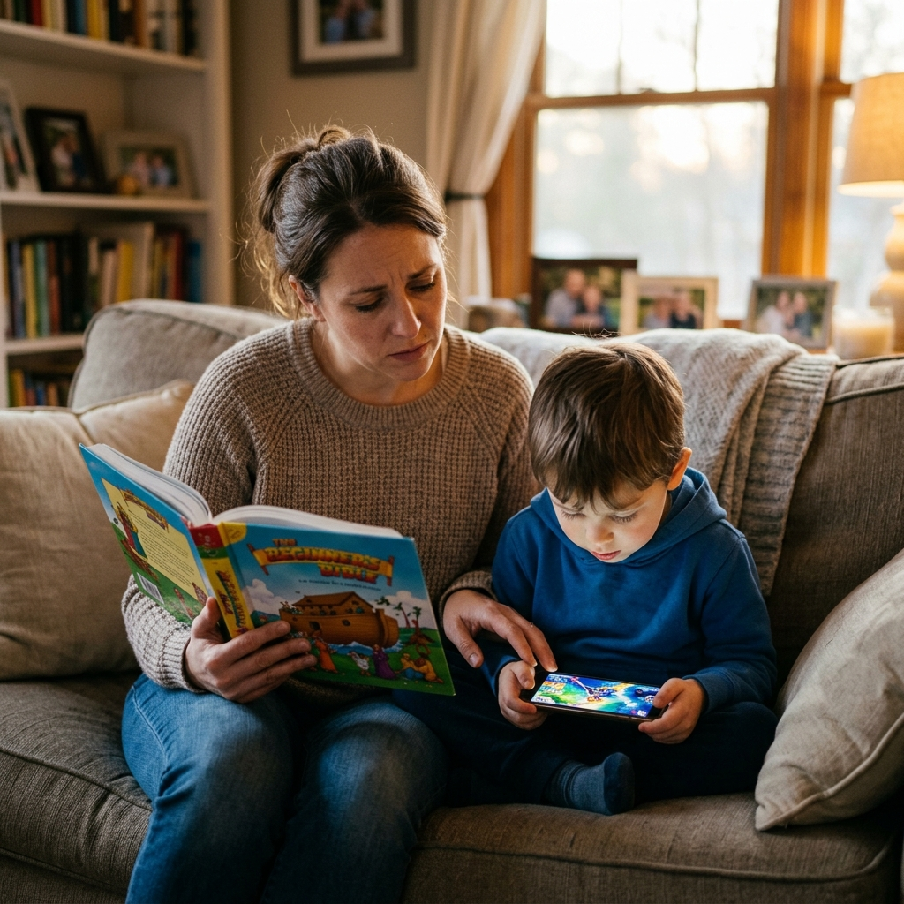

Recupere o controle da educação espiritual da sua família antes que a distração digital molde o coração deles para sempre.
"Mais tarde eu ensino" é a semente da distância. A colheita que você deseja no futuro começa com a conexão que você constrói HOJE.

A infância não espera. O tempo de depositar os valores de Deus é HOJE.
"Eu percebi que estava perdendo meus filhos para os vídeos rápidos. O TBK foi a ferramenta que me ajudou a voltar a plantar no coração deles."
"Finalmente um conteúdo seguro que eles amam. O sistema de estrelinhas mudou a dinâmica aqui em casa. Recomendo para todos os pais!"
"Sempre tive dificuldade em saber por onde começar a ler a Bíblia com eles. Ter as 365 histórias organizadas facilitou minha vida."
Ambiente lúdico, seguro e 100% focado no aprendizado bíblico.
Apresentamos o Tesouros da Bíblia Kids. Um aplicativo web interativo feito especialmente para famílias.
Sem precisar instalar nada complicado. Acesse de qualquer lugar, a qualquer momento.
A cada história lida, a criança ganha uma estrelinha "Lida". Um incentivo que elas amam!
Perfeito para criar o hábito abençoado de ler uma história antes de dormir.
Histórias Bíblicas
🔒 Pagamento 100% seguro
Nosso propósito é levar materiais bíblicos fantásticos para a sua família e ministério infantil.
Você não está sozinho nessa jornada de educar no caminho do Senhor.
Vivemos em uma era onde as telas tentam roubar a identidade dos nossos filhos a cada segundo. O TBK foi desenhado para ser o seu escudo e a sua ferramenta de conexão.
Troque o vício em dopamina barata por histórias que edificam o caráter.
365 histórias prontas. Você não precisa pesquisar o que ler, nós cuidamos de tudo.
Crie o hábito que seus filhos contarão para os netos deles.
Pare de gastar fortunas com brinquedos que quebram amanhã. Invista no que dura por toda a eternidade.
⚠️ Menos que um **McLanche Feliz por ANO** para blindar a vida do seu filho.
🛑 Oferta de lote promocional válida por tempo limitado.
Se não sentir que a conexão com seu filho melhorou, devolvemos seu dinheiro integralmente. Risco zero para você.
O TBK é um Web App. Isso significa que funciona em qualquer navegador de iPhone, Android, Tablet ou Computador. Não precisa baixar nada na loja.
Sim, por ser um aplicativo web interativo, ele requer conexão com a internet para carregar as histórias e salvar o progresso das estrelinhas.
Seu investimento de R$ 29,90 garante acesso por 1 ano inteiro a todas as 365 histórias e atualizações do app.
Totalmente. Não existem anúncios, links externos ou conteúdos inapropriados. É um ambiente 100% bíblico e focado na educação cristã.